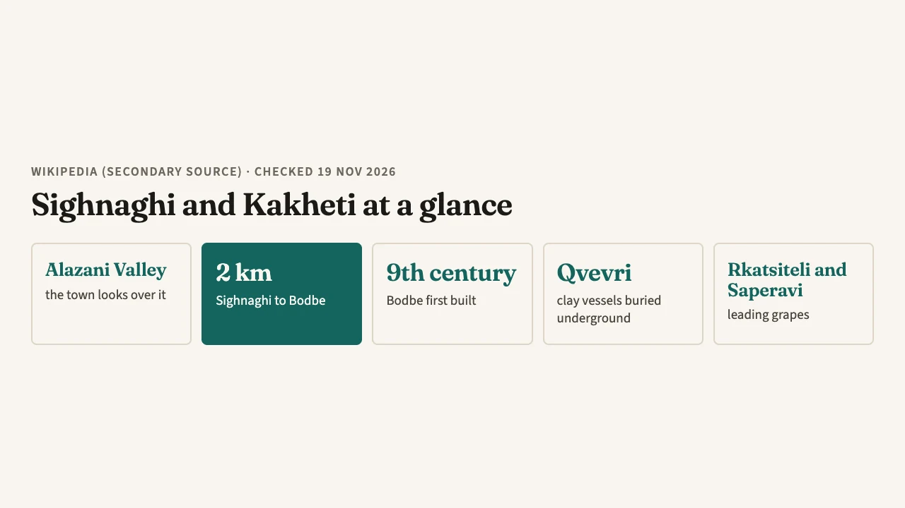
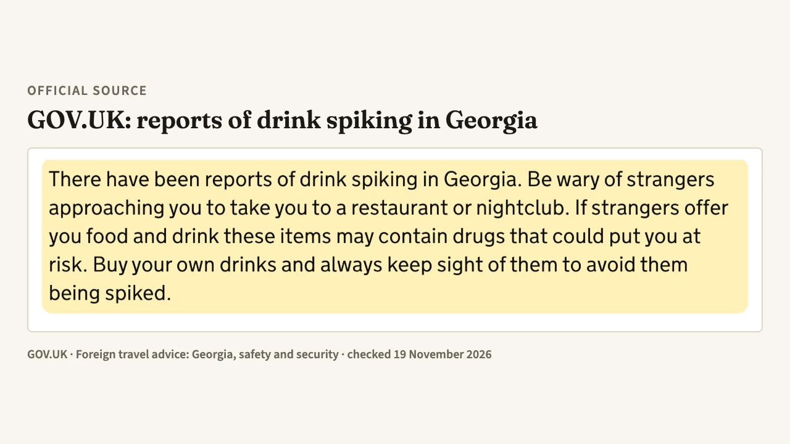

- Bodbe from the town
- 2 km (Wikipedia)
- Bodbe first built
- 9th century (Wikipedia)
- Binge drinking (NHS)
- over 8 units men, over 6 units women
- Drink and drive
- avoid alcohol (GOV.UK)
- Emergency
- 112
This page is about Georgia the country, not the US state, and is part of the Georgia Travel Guide. Checked on 19 November 2026.
Sighnaghi: the hill town over the Alazani Valley
It is a small walled town on a hilltop in the far east of the country. Wikipedia describes "a town in Georgia's easternmost region of Kakheti and the administrative center of the Signagi Municipality", and "one of Georgia's smallest towns".
The view. Built on a steep hill, the town "overlooks the vast Alazani Valley, with the Caucasus Mountains visible at a distance", Wikipedia says.
Why people come. Wikipedia calls it "a popular tourist destination due to its location at the heart of Georgia's wine-growing regions", with "pastel houses and narrow, cobblestone streets".
The City of Love. The town "is known as the 'City of Love' in Georgia, with many couples visiting it just to get married", according to Wikipedia.
Churches and the museum. According to Wikipedia, there are two Georgian Orthodox churches in the town itself, one dedicated to St. George and the other to St. Stephen. The local museum was upgraded into a modern exhibition in 2007.
Our tip. The lanes are steep and cobbled. Wear shoes with a good grip, and take extra care on the way back from a tasting.

Bodbe Monastery and St. Nino
It is a nunnery and one of the main pilgrimage sites in Georgia, a short way from the town. Wikipedia describes "The Monastery of St. Nino at Bodbe" as "a Georgian Orthodox monastic complex and the seat of the Bishops of Bodbe located 2 km from the town of Sighnaghi".
History. "Originally built in the 9th century, it has been significantly remodeled, especially in the 17th century," Wikipedia says.
St. Nino. The monastery "now functions as a nunnery and is one of the major pilgrimage sites in Georgia, due to its association with St. Nino, the 4th-century female evangelist of Georgians, whose relics are shrined there."
The setting. It is "nested among tall Cypress trees on a steep hillside overlooking the Alazani Valley", according to Wikipedia.
What to wear. The UK safety advice says: "When travelling outside cities, be aware of cultural sensitivities around modest dress (particularly in places of worship) and showing affection in public."
Our tip.
- Pack a light layer that covers your shoulders and knees, and a scarf.
- Follow any signs or requests at the gate.
- Keep your voice down and ask before taking photos of people.
- Visit Bodbe before the tasting, not after it.

Kakheti wine: qvevri, Rkatsiteli and Saperavi
This is the heart of Georgian winemaking. Wikipedia says the Kakheti region is "widely regarded as the country’s principal wine-producing area".
Qvevri. Kakheti "is also associated with traditional Georgian winemaking methods, including the use of large clay vessels known as qvevri, which are buried underground and used for fermentation and aging", Wikipedia says.
The grapes. "Among the many grape varieties cultivated in Kakheti, Rkatsiteli and Saperavi are the most prominent." Rkatsiteli "is widely used in white wines", while Saperavi "is the most widely planted red grape variety in the region".
Cellars and tours. We name none and quote no prices or times: we found no official source we could check. Our tip: ask your host which cellars are open that day.
Our tip. A tasting is a run of small pours, one after another, and they add up. Read the next section before you set off.

Wine tasting without the hangover: NHS advice
Our tip: pace yourself, because small pours add up. The NHS says: "Drinking too much alcohol too quickly on a single occasion is called binge drinking. This means drinking more than 8 units of alcohol in a single session for men, or more than 6 units in a single session for women."
Why it matters. The NHS says binge drinking can increase your risk of:
- "accidents resulting in injury, causing death in some cases";
- "misjudging risky situations";
- "losing self-control, like having unprotected sex or getting involved in violence".
How to cut the risk. To reduce your health risks on a single occasion, the NHS says:
- limit how much you drink;
- drink more slowly;
- drink with food;
- alternate your drinks with water or non-alcoholic drinks.
Counting units. We do not turn glasses into units for you. The NHS explains: "The number of units in a drink is based on the size of the drink and its alcohol strength."
No safe level. The NHS also notes that "there's no safe drinking level". The less you drink, it says, "the lower the health risks".
Our tip: at a tasting.
- Eat before you go, and again between pours.
- Keep a glass of water by you and sip it between tastes.
- You do not have to finish each glass: a sip is enough to taste.
- Decide before you start how many cellars you will visit that day.
Heat. In summer, read our heat advice in the Batumi guide as well.

Drink spiking and home-made spirits
Keep an eye on your glass, especially with people you have just met. The UK safety advice says: "There have been reports of drink spiking in Georgia. Be wary of strangers approaching you to take you to a restaurant or nightclub. If strangers offer you food and drink these items may contain drugs that could put you at risk. Buy your own drinks and always keep sight of them to avoid them being spiked."
Methanol. GOV.UK points to Travel Aware's information on spiking and methanol poisoning.
If you feel threatened. GOV.UK says: "call the emergency number 112 and ask for the police."
Our tip.
- Buy your own drinks and keep them in sight.
- Say no to drinks from strangers if anything feels off.
- If you are not sure what is in a bottle, do not drink from it.
- If you or a friend suddenly feel very drunk or unwell after a small amount, stop drinking, stay together and call 112.
For more on staying safe, read is Georgia safe?

Driving after wine
If you are driving, skip the tasting. The UK safety advice says: "Drink driving punishments can be severe. Georgia has a lower blood alcohol content limit than the UK, so avoid alcohol if driving."
The limit. The simple rule from GOV.UK is enough: if you drive, do not drink.
Other drivers. The Government of Canada's travel advice lists among common habits on Georgian roads that drivers "drive under the influence". It advises: "always drive defensively" and "avoid travelling after dark".
Country roads. The same advice says roads in rural areas are "sometimes poorly maintained and dangerous", with "stray livestock" among the reasons.
Our tip. Agree on a sober driver before the first glass, or book a driver who will not drink. Read our guide to driving in Georgia.
Medical help in Kakheti
Expect fewer options than in the capital. The UK health advice says: "Outside Tbilisi, medical facilities are limited."
Rural areas. The Government of Canada's travel advice says: "In rural areas, there are shortages of medical supplies and personnel." It adds: "First responders may not be able to access rural areas."
In an emergency. "Dial 112 and ask for an ambulance," the UK says. You can also use the 112 Georgia mobile app to contact emergency services in English. Here is how to call an ambulance on 112.
Clinics in Telavi. Telavi is another town in Kakheti. The catalogue of clinics in Telavi on 100doc.ge listed 13 clinics when we checked on 19 November 2026.
Your cover. Visitors need health and accident cover of at least 30,000 GEL for their whole stay; see the entry rule on travel insurance.
Our tip. Bring enough of your regular medicines for the trip, and save 112 and your host's number in your phone.
Frequently asked questions
What is Sighnaghi famous for?
How far is Bodbe Monastery from the town?
What should I wear at Bodbe?
How much is too much at a tasting?
Can I drive after a tasting?
Is drink spiking a problem in Georgia?
Sources
- Wikipedia: Sighnaghi (secondary source) ↑
- Wikipedia: Bodbe Monastery (secondary source) ↑
- Wikipedia: Kakheti (secondary source) ↑
- NHS: the risks of drinking too much ↑
- GOV.UK travel advice for Georgia: safety and security ↑
- GOV.UK travel advice for Georgia: health ↑
- Government of Canada: travel advice for Georgia ↑
This guide is general information, not medical advice: the doctor decides on your care.